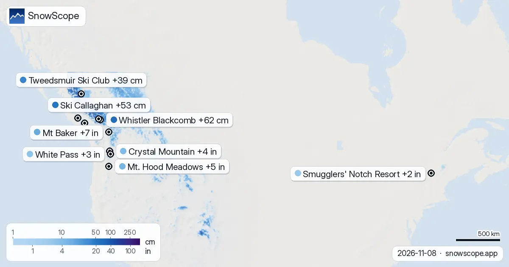

Wo schneit es in den nächsten 72 Stunden am meisten? In Whistler Blackcomb, +62 cm (8. November)
Wo solltest du in den nächsten Tagen sein? Hier sind die Skigebiete mit dem meisten prognostizierten Neuschnee für die nächsten 24 Stunden und bis zum 11. November, in Europa, Marokko und Nordamerika, mit Schneefallgrenze. Feldarbeit in trockenen Bergen lehrt eines: Die Karte ist ein Anfang, das letzte Wort hat der Hang selbst.
Die Live-Schneeprognose für Whistler Blackcomb in der SnowScope-AppSchneehöhen, Pulverschnee-Alarme und 3D-Karte, gratis.
Europa und Marokko
In La Grave (Frankreich): 10 cm in den nächsten 24 Stunden, 32 cm in 72 Stunden, Schneefallgrenze um 2.900 m. Orcières Merlette (Frankreich) erwartet 10 cm in den nächsten 24 Stunden und 30 cm in 72 Stunden, die Schneefallgrenze liegt bei 2.800 m. In Les Deux Alpes (Frankreich): 9 cm in den nächsten 24 Stunden, 28 cm in 72 Stunden, Schneefallgrenze um 2.800 m.
| # | Skigebiet | Region | +24 h | +72 h | Schneefallgrenze |
|---|---|---|---|---|---|
| 1 | La Grave | Alpen · Frankreich | 10 cm | 32 cm | 2.900 m |
| 2 | Orcières Merlette | Alpen · Frankreich | 10 cm | 30 cm | 2.800 m |
| 3 | Les Deux Alpes | Alpen · Frankreich | 9 cm | 28 cm | 2.800 m |
| 4 | Sainte-Anne la Condamine | Alpen · Frankreich | 12 cm | 27 cm | 2.800 m |
| 5 | Pelvoux-Vallouise | Alpen · Frankreich | 10 cm | 27 cm | 2.800 m |
| 6 | Les Orres | Alpen · Frankreich | 10 cm | 25 cm | 2.800 m |
| 7 | Alpe d'Huez Grand Domaine | Alpen · Frankreich | 7 cm | 25 cm | 2.700 m |
| 8 | Forêt Blanche : Vars/Risoul | Alpen · Frankreich | 10 cm | 22 cm | 2.800 m |
| # | Skigebiet | Region | +24 h | +72 h | Schneefallgrenze |
|---|---|---|---|---|---|
| 1 | Mt Baker | US-Westen · USA | 0 in (1 cm) | 7 in (19 cm) | 7.900 ft (2.400 m) |
| 2 | Mt. Hood Meadows | US-Westen · USA | 1 in (3 cm) | 5 in (12 cm) | 10.500 ft (3.200 m) |
| 3 | Crystal Mountain | US-Westen · USA | 1 in (2 cm) | 4 in (10 cm) | 9.500 ft (2.900 m) |
| 4 | White Pass | US-Westen · USA | 0 in (1 cm) | 3 in (8 cm) | 9.500 ft (2.900 m) |
| 5 | Smugglers' Notch Resort | Nordosten der USA · USA | 1 in (2 cm) | 2 in (4 cm) | 3.300 ft (1.000 m) |
| 6 | Sugarbush Resort | Nordosten der USA · USA | 1 in (2 cm) | 2 in (4 cm) | 3.600 ft (1.100 m) |
| 7 | Tuckerman Ravine | Nordosten der USA · USA | 1 in (2 cm) | 2 in (4 cm) | – |
| 8 | Whiteface Mountain | Nordosten der USA · USA | 1 in (2 cm) | 2 in (4 cm) | 3.600 ft (1.100 m) |
| # | Skigebiet | Region | +24 h | +72 h | Schneefallgrenze |
|---|---|---|---|---|---|
| 1 | Whistler Blackcomb | Westkanada · Kanada | 1 cm | 62 cm | 1.900 m |
| 2 | Ski Callaghan | Westkanada · Kanada | 1 cm | 53 cm | 1.600 m |
| 3 | Tweedsmuir Ski Club | Westkanada · Kanada | 0 cm | 39 cm | 1.400 m |
| 4 | Mount Cain Alpine Park | Westkanada · Kanada | 6 cm | 21 cm | 2.500 m |
| 5 | Mount Washington Alpine Resort | Westkanada · Kanada | 2 cm | 7 cm | 2.500 m |
| 6 | Revelstoke | Westkanada · Kanada | 2 cm | 7 cm | 1.400 m |
| 7 | Manning Park Resort | Westkanada · Kanada | 0 cm | 6 cm | 1.900 m |
| 8 | Grouse Mountain | Westkanada · Kanada | 0 cm | 5 cm | 2.200 m |

USA
Mt Baker (USA) erwartet 0 in (1 cm) in den nächsten 24 Stunden und 7 in (19 cm) in 72 Stunden, die Schneefallgrenze liegt bei 7.900 ft (2.400 m). In Mt. Hood Meadows (USA): 1 in (3 cm) in den nächsten 24 Stunden, 5 in (12 cm) in 72 Stunden, Schneefallgrenze um 10.500 ft (3.200 m). Crystal Mountain (USA) erwartet 1 in (2 cm) in den nächsten 24 Stunden und 4 in (10 cm) in 72 Stunden, die Schneefallgrenze liegt bei 9.500 ft (2.900 m).

Kanada
In Whistler Blackcomb (Kanada): 1 cm in den nächsten 24 Stunden, 62 cm in 72 Stunden, Schneefallgrenze um 1.900 m. Ski Callaghan (Kanada) erwartet 1 cm in den nächsten 24 Stunden und 53 cm in 72 Stunden, die Schneefallgrenze liegt bei 1.600 m. In Tweedsmuir Ski Club (Kanada): 0 cm in den nächsten 24 Stunden, 39 cm in 72 Stunden, Schneefallgrenze um 1.400 m.
Die kommenden Tage
Unsere Regel: Die Schneefallgrenze liegt etwa 300 m unter der Nullgradgrenze. Weiter oben bleibt der Neuschnee leicht, weiter unten wird er nass oder fällt als Regen.
Unsere Skigebietswerte sind Schätzungen für die oberen Hänge. Die Stationswerte sind echte Messungen, aber nur an einem Punkt und am angegebenen Tag.
Prognosen für einige Tage können sich ändern: Schau am Tag vor der Abfahrt noch einmal auf die Karte.
Tipps für Skifahrer
- Neuschnee bleibt nicht lange neu. Starte früh, solange er noch weich und unverspurt ist.
- Liegt die Schmelzlinie über dem Skigebiet, wird der Schnee nass. Die höchsten Lifte sind die sichere Wahl.
- Lies vor dem Freeriden oder einer Skitour den offiziellen Lawinenlagebericht (Links unten).
- Schnee auf der Karte heißt nicht, dass das Skigebiet offen ist: Prüfe Lifte und Öffnungstermine auf der Website des Skigebiets.
- Stell in der SnowScope-App einen Pulverschnee-Alarm ein, damit du weißt, wann Whistler Blackcomb Neuschnee bekommt.
Zu diesen Zahlen
Die Schneehöhen der Skigebiete sind der meiste Schnee in den oberen Hängen laut SnowScope-Schneemodell (etwa 1 km, Lauf vom 8. November); es sind Schätzungen für eine Fläche, keine Messung an einem Punkt. Werte von Messstationen sind Messungen am angegebenen Tag. Prognosen können sich ändern. Lies vor dem Freeriden immer den offiziellen Lawinenlagebericht.
Offizielle Lawinenlageberichte: EAWS (Europe) · avalanche.org (US) · Avalanche Canada
Diesen Bericht zitieren
Für Forschung, Lehre oder Presse: Zahlen und Grafiken sind unter CC BY 4.0 mit dieser Quellenangabe frei nutzbar.
SnowScope (2026), Wo schneit es in den nächsten 72 Stunden am meisten? In Whistler Blackcomb, +62 cm (8. November), https://snowscope.app/blog/de/2026/11/where-most-snow-falls-next-72-hours-8-november-2026.html, abgerufen am 2026-11-08
SnowScope (Atlas Labs). (2026, November 8). Wo schneit es in den nächsten 72 Stunden am meisten? In Whistler Blackcomb, +62 cm (8. November). SnowScope snow reports. https://snowscope.app/blog/de/2026/11/where-most-snow-falls-next-72-hours-8-november-2026.html
BibTeX
@misc{snowscope2026wheremostsnowfallsnext72,
author = {{SnowScope (Atlas Labs)}},
title = {Wo schneit es in den nächsten 72 Stunden am meisten? In Whistler Blackcomb, +62 cm (8. November)},
year = {2026},
month = nov,
howpublished = {\url{https://snowscope.app/blog/de/2026/11/where-most-snow-falls-next-72-hours-8-november-2026.html}},
note = {Published 2026-11-08 20:08 UTC; accessed 2026-11-08}
}· CC BY 4.0 · Methoden, Daten und Werkzeuge →
Whistler Blackcomb: Schnee und Temperatur nach Höhe, dieser Winter vs letzter (Werkzeuge) →
Whistler Blackcomb folgen
Gratis: eine Nachricht, wenn Neuschnee kommt, und jeden Morgen die Vorhersage.
Weitere Schneeberichte
Wir haben die SnowScope-Schneehöhenkarte mit 2.012 Messstationen verglichen: RMSE 7,7 cm, Abweichung -0,5 cm, Schnee oder kein Schnee in 88 % der Fälle richtig. Was funktioniert, was noch nicht und was als Nächstes kommt.

Ein Bild, 100 Gebirge in den Alpen, den Pyrenäen, im Atlas und in Nordamerika: Kanada führt mit 89 % Schneebedeckung, die Alpen erreichen 45 %, der Atlas und der Nordosten der USA sind noch aper.

Fahr Revelstokes ganzen Höhenunterschied erst im Kopf: der Schnee am Gipfel, an der Bergmitte und unten im Tal in 46 vergangenen Wintern, und wann jeder Teil am besten ist.